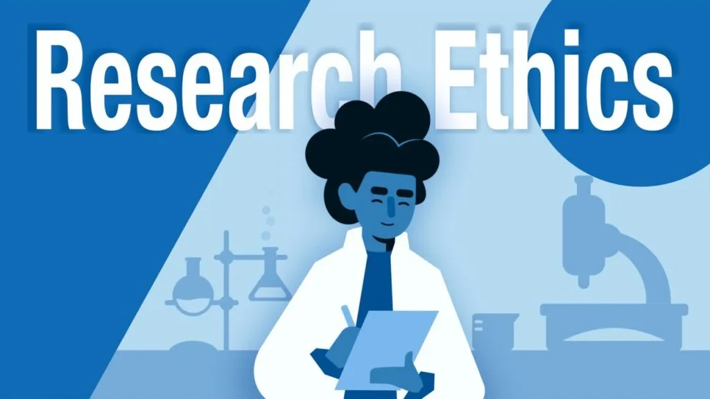

Expanded Nursing Uganda Explanation
Introduction to research should be understood beyond a short definition. Link the concept to patient history, focused assessment, common risks, nursing priorities, documentation and evaluation of outcomes.
01 Overview
- Purpose of Research
- Characteristics of Credible Research
- Types of Research by Classification
- Classification based on the Approach
- Reasons for Studying Research
- Nurse’s Responsibility in Relation to Research
Research is fundamentally the systematic collection, analysis, and interpretation of data to answer a specific question or solve a problem.
The term "research" itself is derived from the combination of two words: "re" and "search."
- "Re" is a prefix meaning "again" or "anew."
- "Search" is a verb signifying a close and careful examination, testing, probing, or trying. Combined, "research" describes a meticulous, systematic, and persistent study and investigation within a specific field of knowledge, carried out to establish facts or principles.
It's a careful and organized way of:
- Collecting information: Gathering facts, observations, and data.
- Looking at the information: Studying and understanding what you've collected.
- Explaining what you found: Sharing your discoveries so others can learn.
Research can also be defined as:
- An investigative process aimed at finding reliable solutions to problems through a systematic selection, collection, analysis, and interpretation of data related to the issue at hand.
- It encompasses all activities that enable us to discover new knowledge about the world around us.
- The process involves defining and redefining problems, formulating theories or suggested solutions, collecting, organizing, and evaluating data, making deductions and reaching conclusions, and rigorously testing those conclusions against the formulated hypothesis or theory.
- A search for knowledge.
- A careful investigation or inquiry , especially through the search for new facts in any branch of knowledge.
- A systematized effort to gain new knowledge.
- An organized investigation of a problem.
- A planned, systematic search for information for the purpose of increasing the total body of humankind's knowledge.
- A careful inquiry or examination , seeking facts or principles; a diligent investigation to ascertain something.
- Problem Solving: To find answers to questions or solutions to existing problems.
- Discovery of New Knowledge: To uncover and interpret new facts or phenomena.
- Theory Testing and Development: To test existing theories, potentially leading to their revision or refinement in light of new evidence.
- To formulate entirely new theories to explain observed patterns.
- Verification of Existing Knowledge: To validate or challenge current understandings and theories.
- Understanding Patterns and Relationships: To determine the frequency, distribution, and associations of events or phenomena (e.g., in epidemiology or social sciences).
- Informing Decision-Making: To provide a reliable guide or framework for evidence-based decision-making in various fields, from policy to business strategy.
- Prediction and Explanation: To predict, explain, and interpret behavior or occurrences, contributing to a deeper understanding of causality.
- Knowledge Expansion: To expand the existing knowledge base and add to the collective understanding of humanity.
- Innovation and Implementation: To propose and implement effective solutions to pressing problems and challenges.
- Academic and Professional Advancement: To achieve academic qualifications (e.g., dissertations, theses) and enhance professional expertise.
For research to be considered credible, valuable, and trustworthy, it should consistently possess the following characteristics:
- Clear Purpose: The research must have a well-defined, specific, and unambiguous objective or set of objectives.
- Transparent Procedure: The methods, materials, and procedures used in the research should be described in sufficient detail and clarity to enable others to understand, evaluate, and potentially replicate the study.
- Objective Design: The research design should be carefully planned and executed to minimize bias, subjectivity, and confounding factors, thereby producing objective and unbiased results.
- Honesty and Truthfulness: Research findings must be reported with complete honesty, integrity, and without distortion, fabrication, or falsification.
- Adequate Data Analysis: The data analysis techniques employed must be appropriate for the type of data collected and sufficient to rigorously test hypotheses and reveal the significance of the findings.
- Validity and Reliability: Validity: The data collected must genuinely measure what it is intended to measure.
- Reliability: The data collection methods should yield consistent results if the study were to be repeated under similar conditions.
- Generalizability: Where applicable, the research findings should have the potential to be applied or relevant beyond the specific study population or context, contributing to broader theoretical understanding.
- Limited and Justifiable Conclusions: Conclusions drawn from the research must be based solely on the evidence obtained from the study, be logical, and well-supported by the data. Overgeneralization or drawing conclusions not supported by the data should be avoided.
- Problem-Oriented: It is always directed towards the solution of a specific problem or inquiry.
- Emphasis on Generalizations: It often aims to establish principles or theories that can be applied more broadly, rather than just describing isolated events.
- Accuracy and Description: Demands accurate observations and precise descriptions of phenomena.
- Data Sourcing: Involves gathering new data from primary (first-hand) sources or applying existing data for a new purpose or interpretation.
- Carefully Designed: Requires meticulous planning before execution to ensure validity and efficiency.
- Requires Expertise: Often necessitates specialized knowledge, skills, and understanding of research methodologies.
- Objective and Logical: Strives to be impartial, evidence-based, and follows a rational, systematic approach.
- Quest for Answers: Involves the continuous quest for answers to unresolved or partially understood problems.
- Patient and Persistent Activity: Requires patience, diligence, and unhurried effort, as research outcomes are not always immediate or straightforward.
- Carefully Recorded and Reported: All procedures, data, and findings must be meticulously documented and communicated clearly.
- Intellectual Courage: Sometimes requires intellectual courage, especially when challenging existing paradigms or presenting unpopular but evidence-based findings.
Research can be systematically classified based on various criteria. For nursing and midwifery students, understanding these classifications helps in selecting the appropriate research design for a particular inquiry and interpreting findings more effectively.
Research is broadly categorized into three main classifications:
- Basic (Pure) Research
- Applied Research
- Action Research
- Evaluation Research
- Historical Research
- Descriptive Research
- Analytical Research
- Correlational Research
- Experimental Research
- Qualitative Research
- Quantitative Research
- Mixed Methods Approach
Applied research refers to the scientific study that solves practical problems and aims to find solutions to everyday issues. It focuses on practical application, developing innovative technologies, or improving existing practices, rather than simply acquiring knowledge for knowledge's sake.
- Problem-focused: Directly addresses specific, real-world problems.
- Practical application: Seeks to provide immediate or near-term solutions.
- Often interdisciplinary: Can draw on various fields of study.
- Developing and testing a new educational program for diabetic patients to improve self-management.
- Evaluating the effectiveness of a specific wound care dressing in preventing infections.
- Investigating the best protocol for managing postpartum hemorrhage in rural clinics.
- Designing an intervention to reduce medication errors in a hospital setting.
Basic research is driven by a scientist’s curiosity or interest in a fundamental scientific question. Its primary motivation is to expand the existing body of knowledge and understanding about a phenomenon, without an immediate practical application in mind. The discoveries from basic research may not have obvious commercial or practical value at the time of discovery, but they form the foundation for future applied research.
- Knowledge-driven: Focuses on understanding fundamental principles.
- Theory development: Often contributes to building or refining scientific theories.
- Long-term impact: Findings may not have immediate practical use but can be foundational for future advancements.
- Studying the cellular mechanisms underlying pain perception.
- Investigating the genetic factors influencing a newborn's physiological response to stress.
- Exploring the precise biochemical pathways involved in milk production during lactation.
- Understanding the psychological processes of empathy in healthcare providers.
Action research advances the aims of basic and applied research to the point of utilization, often involving practitioners directly in the research process. It is concerned with the production of results for immediate application or utilization within a specific context. Its primary goal is to improve existing practices and methods, and sometimes to generate technologies and innovations for application to specific professional or organizational situations. The emphasis is on "here and now" problems and their immediate solutions through a cyclical process of planning, acting, observing, and reflecting.
- Context-specific: Focused on solving problems within a particular setting (e.g., a specific hospital ward, a community clinic).
- Participatory: Often involves the people who are experiencing the problem (e.g., nurses, patients, community members).
- Cyclical process: Involves ongoing reflection and refinement of interventions.
- Immediate impact: Aims for rapid improvement in practice.
- A team of nurses on a surgical ward collaboratively researching and implementing a new protocol for shift handover to improve communication and patient safety, then evaluating its immediate impact.
- Midwives working with a community to develop and implement culturally sensitive health education programs to address low antenatal care attendance, and refining the program based on feedback.
- A nurse educator observing challenges in student clinical skills acquisition, then collaboratively designing and testing new simulation exercises with students to improve learning outcomes.
Evaluation research involves the generation of results that help in decision-making regarding the worth or merit of a program, intervention, or policy. It systematically assesses how well something is working by looking at what was set to be done (objectives), what has actually been achieved (outcomes), and then makes a decision on what next steps need to be done (e.g., continue, modify, expand, or terminate).
- Assessment-focused: Determines the effectiveness, efficiency, or value of something.
- Decision-oriented: Provides information for making informed choices.
- Uses various methods: Can employ both quantitative and qualitative techniques.
- Evaluating the effectiveness of a national vaccination program in reducing the incidence of childhood diseases.
- Assessing the impact of a new patient education brochure on understanding medication instructions among older adults.
- Conducting a post-implementation evaluation of a hospital's new electronic health record system to identify its benefits and challenges for nursing staff.
- Evaluating a government policy on increasing access to rural midwifery services.
Correlational research refers to the systematic investigation or statistical study of relationships between two or more variables, without necessarily determining a cause-and-effect link. It aims to establish if a relationship (association or correlation) exists between variables and the strength and direction of that relationship. It does not prove that one variable causes another.
- Examines relationships: Identifies patterns of co-occurrence between variables.
- No manipulation of variables: Researchers observe variables as they naturally occur.
- Cannot establish causation: A key limitation is that correlation does not equal causation.
- Investigating the relationship between a mother's nutritional status during pregnancy and the birth weight of her baby.
- Studying the correlation between the number of hours nurses work per week and patient satisfaction scores.
- Examining the association between infant feeding practices (e.g., exclusive breastfeeding) and the incidence of childhood infections.
- Testing whether listening to specific types of music in labor is associated with lower reported pain levels. (Your example: "assign the groups to experimental and control" suggests an experimental design, not purely correlational, so I've adjusted the explanation for correlation).
Descriptive research refers to studies that provide an accurate and detailed portrayal of characteristics of a particular individual, situation, or group. It aims to describe "what exists" by identifying, documenting, and characterizing the features of a phenomenon. It is sometimes known as statistical research because it often involves quantifying observations to determine frequencies, averages, and proportions.
- Answers "what" questions: Focuses on describing the characteristics of a population or phenomenon.
- No manipulation of variables: Observes and reports on natural occurrences.
- Foundation for further research: Often the first step in understanding a new topic.
- Determining the prevalence of malnutrition among children under five in a specific region.
- Describing the typical daily activities of nurses in a busy emergency department.
- Identifying the most frequent complications experienced by patients post-surgery in a particular ward.
- A survey documenting the attitudes of pregnant women towards different birthing options.
Ethnographic research is an in-depth investigation of a culture, subculture, or social group through immersive study of its members. It involves the systematic collection, description, and analysis of data to develop theories of cultural behavior and understanding the world from the perspective of those being studied. The researcher often lives within the community or spends extended periods observing and interacting.
- Immersive: Researchers spend significant time within the cultural setting.
- Holistic understanding: Aims to understand the entire context and interplay of factors.
- Qualitative: Relies heavily on observation, interviews, and field notes.
- Studying the traditional health practices and beliefs of a specific indigenous community regarding childbirth.
- Investigating the unspoken rules, routines, and social structures within a specific hospital unit from the perspective of the nursing staff.
- Exploring how a particular cultural group views illness, healing, and the role of healthcare providers.
- Understanding the daily experiences and coping mechanisms of families caring for a child with a chronic illness in their home environment.
Experimental research is an objective, systematic, and highly controlled investigation conducted to predict and control phenomena and to examine probability and causality among selected variables. It is the most rigorous type of research for establishing cause-and-effect relationships by manipulating one or more variables (independent variables) and observing their effect on an outcome variable (dependent variable), while controlling for other influencing factors.
- Manipulation: The researcher actively changes one or more variables.
- Control: Strict control over extraneous variables to isolate the effect of the manipulated variable.
- Randomization: Participants are often randomly assigned to groups to ensure comparability.
- Cause-and-effect: Aims to determine if a change in one variable directly causes a change in another.
- Determining the efficacy of a new pain management intervention (e.g., aromatherapy vs. standard care) on post-operative pain levels in patients.
- Testing whether a specific training program for midwives leads to a reduction in perineal tears during delivery.
- Comparing the effectiveness of two different wound cleaning solutions on the healing time of surgical incisions.
- Evaluating the impact of a nurse-led discharge planning intervention on hospital readmission rates.
Exploratory research is the type of research conducted for a problem that has not been clearly defined or thoroughly investigated. It aims to gain preliminary understanding, insights, and ideas about a phenomenon. This research helps to determine the best research design, data collection methods, and selection of subjects for future, more definitive studies. The results of exploratory research are not usually useful for decision-making by themselves and are typically not generalizable to the wider population, but they can provide significant initial insight into a given situation.
- Early stage: Conducted when a topic is new or poorly understood.
- Flexible approach: Methods can be adapted as new information emerges.
- Generates hypotheses: Often leads to the development of testable ideas for future research.
- Conducting focus groups with new mothers to understand their initial experiences and challenges with breastfeeding in a community where breastfeeding rates are low.
- Interviewing healthcare workers about their perceptions of a new, complex electronic health record system before its widespread implementation.
- Observing patient flow in an outpatient clinic to identify bottlenecks before designing a new scheduling system.
- A pilot study exploring the use of virtual reality for pain distraction in children during minor procedures.
Grounded Theory is a qualitative research approach designed to discover what problems exist in a given social environment and how persons involved handle them. It involves a systematic set of procedures for developing an inductive theory about a phenomenon grounded in the data itself. The process involves formulation, testing, and reformulation of propositions until a theory is developed that explains the phenomenon under study. It operates almost in reverse fashion from traditional deductive research, where a theory is tested.
- Theory generation: Aims to build a theory from the ground up, based on data.
- Iterative process: Data collection and analysis occur simultaneously and are cyclical.
- Focus on social processes: Often explores how individuals interact and manage situations.
- Developing a theory explaining how new graduate nurses transition into independent practice in a high-stress environment.
- Investigating the process by which families of critically ill patients make end-of-life decisions.
- Exploring how women living with chronic pelvic pain develop coping strategies in their daily lives.
- Developing a conceptual framework for understanding patient resilience in the face of long-term illness.
Historical research involves the systematic analysis and interpretation of events that occurred in the remote or recent past. Its purpose is to reconstruct past events accurately and objectively, explain their significance, and understand their impact on the present and future. Historical research can reveal patterns that occurred over time, providing context and lessons learned from past solutions.
- Past-focused: Examines records and sources from the past.
- Interpretive: Involves critical evaluation and synthesis of historical data.
- Documentary: Often relies on primary (e.g., diaries, original records) and secondary (e.g., textbooks, articles) sources.
- Tracing the evolution of infection control practices in hospitals from the 19th century to the present day.
- Documenting the role of nurses and midwives during significant public health crises (e.g., pandemics, wars) in a specific country.
- Investigating how attitudes towards breastfeeding have changed in a particular culture over several decades.
- Analyzing historical records to understand the development of nursing education in East Africa.
Phenomenological research is an inductive, descriptive, qualitative research approach developed from phenomenological philosophy. Its primary aim is to describe and understand an experience as it is actually lived by the person , focusing on the essence and meaning of that experience from the individuals' perspectives. It seeks to uncover the universal structures of a lived experience, rather than explaining it.
- Lived experience: Focuses on the subjective experiences of individuals.
- Essence of a phenomenon: Aims to describe the core meaning of an experience.
- In-depth interviews: Often involves extensive conversations with participants.
- Qualitative: Rich, descriptive data is the primary output.
- Understanding the lived experience of women undergoing chemotherapy for breast cancer.
- Exploring the experience of grief and loss for parents whose child is admitted to palliative care.
- Describing what it is like for a patient to live with a chronic, invisible illness like fibromyalgia.
- Investigating the experiences of newly qualified midwives adapting to their professional role and responsibilities.
This classification distinguishes research based on the nature of the data collected and the analytical methods used.
Definition: Qualitative research aims for an in-depth understanding of human behavior and the underlying reasons that govern such behavior. It involves the analysis of non-numerical data, such as words (e.g., from interviews, focus groups, narratives), pictures (e.g., video recordings, photographs), or objects (e.g., artifacts, creative expressions).
Qualitative research deals with phenomena that are difficult or impossible to quantify mathematically, such as beliefs, meanings, attributes, perceptions, experiences, and symbols. Qualitative researchers investigate the "why" and "how" of decision-making, not just "what," "where," or "when."
- Explores depth and meaning: Seeks to understand subjective experiences and perspectives.
- Non-numerical data: Uses text, images, or observations.
- Rich, descriptive findings: Provides detailed insights into complex phenomena.
- Inductive reasoning: Often generates theories or hypotheses from the data.
- Conducting in-depth interviews with adolescent mothers to understand their experiences and challenges in continuing their education after childbirth.
- Using focus groups to explore the perceptions of palliative care among family members of terminally ill patients.
- Observing and documenting non-verbal communication patterns between nurses and patients from different cultural backgrounds.
- Analyzing patient narratives about their experiences with chronic pain to identify common themes and coping strategies.
Definition: Quantitative research involves the analysis of numerical data and their statistical relationships. It is generally conducted using scientific methods to measure and test hypotheses objectively. This approach often includes the generation of models, theories, and hypotheses; the development of instruments and methods for measurement; experimental control and manipulation of variables; collection of empirical data; statistical modeling and analysis of data; and the evaluation of results against predetermined criteria.
- Measures and tests: Focuses on quantifying variables and testing hypotheses.
- Numerical data: Uses numbers, statistics, and graphs.
- Objective and generalizable: Aims for measurable, unbiased results that can often be generalized to larger populations.
- Deductive reasoning: Often tests pre-existing theories or hypotheses.
- A study measuring the average blood pressure reduction in patients after receiving a specific antihypertensive medication.
- Administering a validated questionnaire to a large sample of nurses to quantify their job satisfaction levels and correlate them with factors like workload.
- Counting the frequency of medication errors in a hospital unit before and after implementing a new barcode scanning system.
- A randomized controlled trial comparing the efficacy of two different dosages of an analgesic on patient-reported pain scores.
Definition: A mixed methods approach employs the use of both qualitative and quantitative research methods within a single study or series of studies. It leverages the strengths of both approaches: using numerical data to measure and quantify, and qualitative data to provide in-depth understanding of the occurrences. This integration offers a more comprehensive understanding of a research problem than either approach could achieve alone.
- Integration: Systematically combines qualitative and quantitative data and methods.
- Comprehensive understanding: Aims to gain a fuller picture of the phenomenon.
- Triangulation: Can use one method to validate or complement findings from the other.
- A study that first conducts a quantitative survey to identify the prevalence of depression among new mothers (quantitative) and then follows up with in-depth qualitative interviews with a subset of those mothers to understand their lived experiences of postpartum depression (qualitative).
- Evaluating a new patient education program by collecting quantitative data on patient knowledge scores and medication adherence rates, combined with qualitative data from focus groups exploring patients' experiences with the program.
- Using quantitative data to identify patterns in hospital readmission rates, and then using qualitative interviews with readmitted patients and their nurses to understand the underlying reasons for readmission.
- Description Qualitative research Quantitative research
- Data collection methods/tools Focus groups, in-depth interviews, reviews of documents for themes Surveys, structured interviews/questionnaires, observations, reviews of records for numeric information
- Nature Primarily inductive process used to formulate theory or hypotheses Primarily deductive process used to test pre-specified concepts, constructs, and hypotheses that make up a theory
- Subjectivity/objectivity More subjective: describes problem from the point of view of those experiencing it More objective: provides observed effects (interpreted by researchers) of a program or condition
- Presentation Text-based Number-based
- Type of information More in-depth information on a few cases Less in-depth but more breadth of information across a large number of cases
- Generalizability of findings Less generalizable More generalizable
- Type of response Unstructured or semi-structured response options Fixed response options
- Analysis No statistical tests Statistical tests are used for analysis
- Reliability and validity Can be valid and reliable: largely depends on skill and rigor of the researcher Can be valid and reliable: largely depends on the measurement device or instrument used
- Time spent on planning and analysis Lighter on planning, heavier during analysis phase Heavier on planning, lighter on analysis phase
Research offers broad benefits across healthcare.
- Promotes Basic Knowledge: Supports infrastructure management, including drug treatment, and nursing or medical management of disease or health care, ensuring evidence-based practices.
- Develops New Tools: Leads to the creation of new drugs, vaccines, and diagnostic tools.
- Informs Public: Educates the public on research findings to promote healthy practices and lifestyles.
- Enables Effective Planning: Provides data for better management and strategic decision-making.
Nursing specifically relies on research for growth and efficacy.
- Molds Attitudes and Skills: Develops intellectual competence and technical skills.
- Fills Knowledge Gaps: Addresses insufficient or outdated knowledge and practice.
- Fosters Accountability: Provides evidence to justify nursing actions and ensure client accountability.
- Provides Professional Basis: Elevates professionalism and accountability in nursing.
- Identifies Nurse's Role: Redefines the nurse's role in a changing society.
- Discovers New Measures: Develops novel assessment tools and interventions for practice.
- Supports Administration: Informs prompt administrative decisions for problem-solving.
- Improves Education Standards: Ensures nursing education is current and evidence-based.
02 Nursing Uganda Clinical Lens
Use Introduction to research as a practical nursing topic, not only a memorized definition. Translate theory into safe decisions, accountability, communication and service improvement.
- What to understand first: define introduction to research, identify the normal or expected pattern, then explain what changes when the patient is unwell.
- Why it matters in care: the nurse must recognize risk early, explain findings clearly, document accurately and know when to escalate.
- How to revise it: connect each point to assessment, nursing diagnosis or care problem, intervention, rationale and evaluation.
03 Assessment Guide
- The problem, stakeholders, available resources, policy requirements and ethical issues.
- Risks to patients, staff, confidentiality, quality, costs and continuity.
- Documentation, reporting lines, supervision and evaluation measures.
04 Nursing Priorities, Rationales and Outcomes
- Use evidence, policy and professional standards to guide action.
- Communicate clearly, document decisions and protect confidentiality.
- Evaluate whether the action improves safety, learning or service delivery.
The rationale for these priorities is patient safety: nursing actions should prevent deterioration, reduce discomfort, support recovery and create clear evidence for the next caregiver.
- Expected outcome: The plan is documented, realistic, ethical and improves patient care or learning outcomes.
05 Patient Teaching and Revision Check
- Explain introduction to research in simple language the patient or caregiver can repeat back.
- Teach warning signs, medicine or follow-up instructions, hygiene or lifestyle points where relevant.
- For exams, prepare a short answer using: definition, causes or risk factors, signs, assessment, management, complications and prevention.
- For ward practice, document baseline findings, actions taken, patient response and the plan for review.
Illustrations and Diagrams (7)



Related Video Lectures
Watch nursing lecture videos on YouTube for this topic. Opens in a new tab.
Watch on YouTubeExternal link: YouTube may use its own cookies and terms. Nursing Uganda is not affiliated with YouTube.